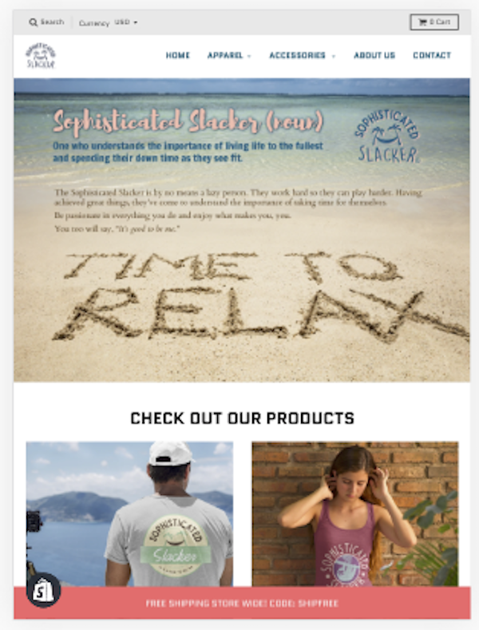
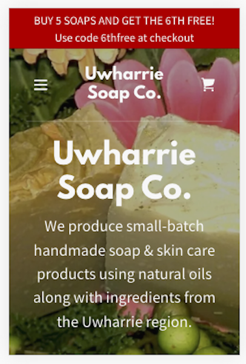
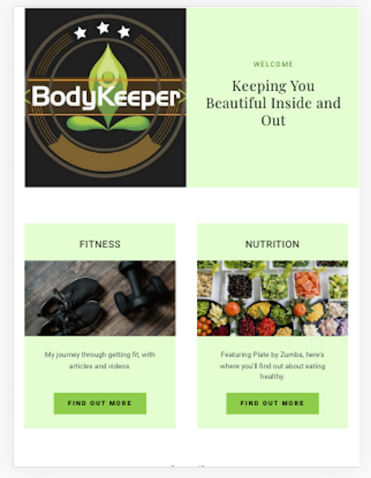
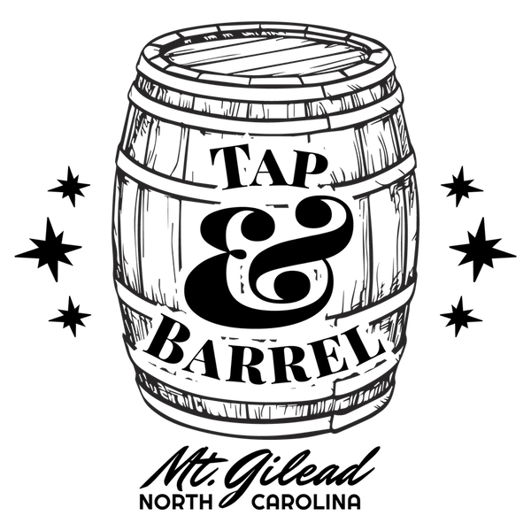
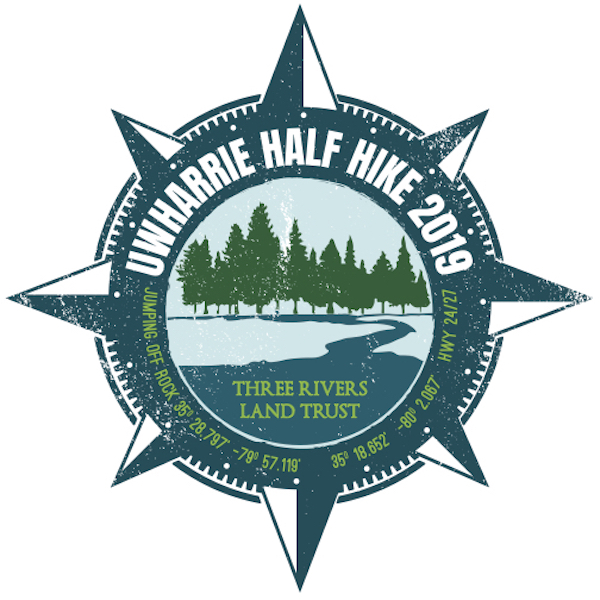
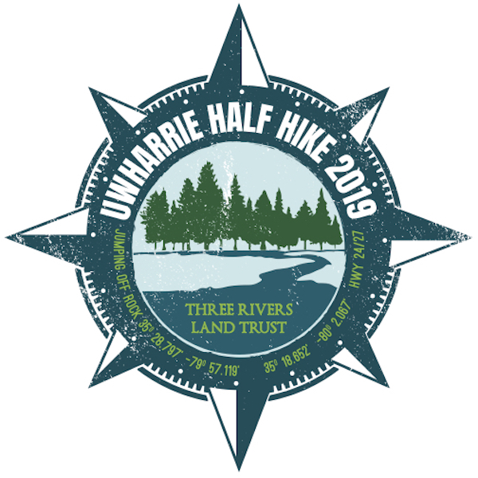
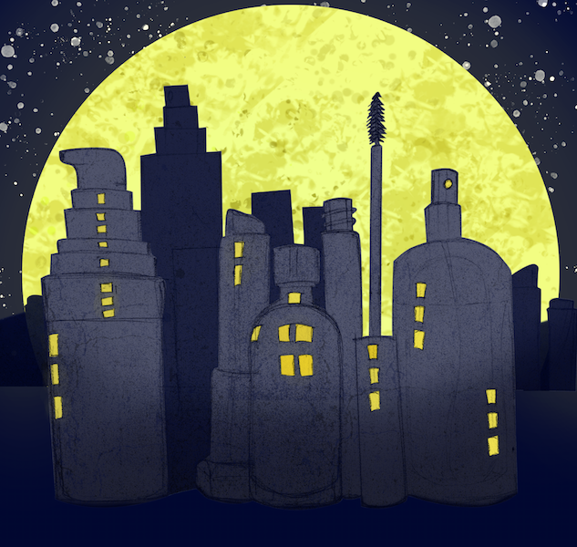
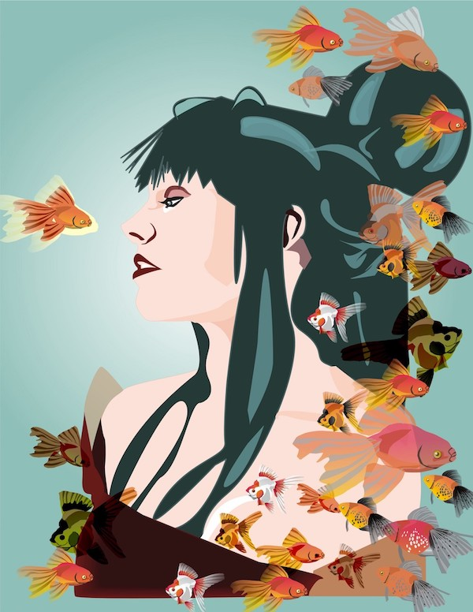
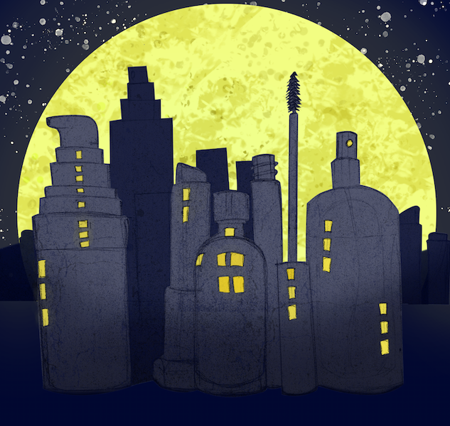
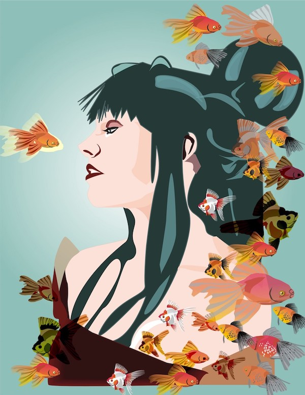

Jamie Kellis
Graphic & Web Designer
Hello, and welcome! I'm a freelance graphic designer from North Carolina. I've worked with local small businesses and my county's community college to create print and digital advertising campaigns, collateral materials, and websites. I'm passionate about design and the creative process.
Featured Projects
Websites
Click on the thumbnails below to check out the full websites (each opens in a new tab).
  Logos
The logos below were designed for t-shirts for a new business (Tap and Barrel), an annual church Bible school (Waypoint Christian Church), and a nonprofit event (Uwharrie Half Hike).
 

Artwork
Here are a few of my favorite pieces, created in various design classes.
 



Work Experience
Owner and Designer
JRKellis Design
2018 - Present
I currently work as a freelance graphic and web designer, and am always looking for new projects! I help businesses and organizations to get established online and create media both for online and offline use.
Assistant to the Public Information Officer
Montgomery Community College
2016 - 2018
While working for MCC, I worked closely with the Public Information Officer to create artwork for various programs, events, and informational purposes. From billboards to semester schedules and posters to annual reports, I created all the visuals for the college.
Education
Wake Technical Community College - Raleigh NC
Associate in Applied Science: Web Design, 2019 - present
Randolph Community College - Asheboro NC
Associate in Applied Science: Advertising & Graphic Design, 2008 - 2010
Recipient of 1st annual Curriculum Achievement Award for excellent performance in Advertising & Graphic Design, 2010